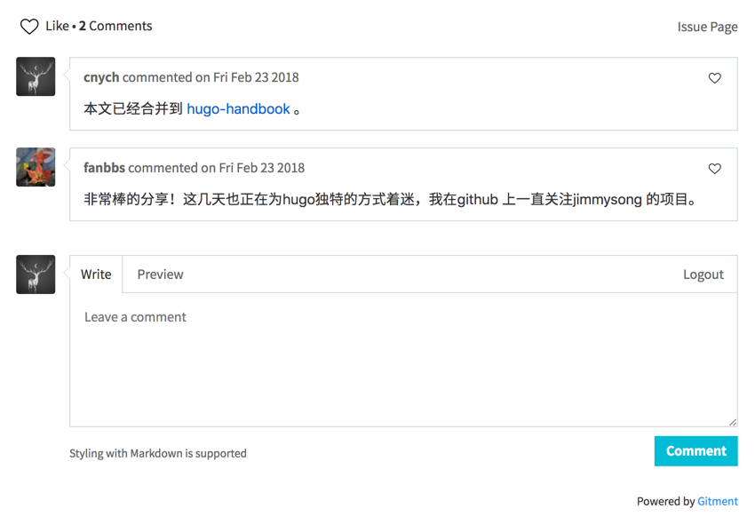

网站评论插件
前面我们为Hugo集成了Algolia搜索插件，要让我们的网站具备博客的基本功能的话，一般情况下评论也是非常需要的，评论承载着作者与读者之间交流的桥梁，所以我们可以看到市面上有很多单独的评论服务，比如最出名的disqus，国内也有之前比较出名的多说(现在已经关闭)、有言等等，要使用他们非常简单，只需要嵌入一些简单的代码即刻开启移动社交评论
服务。不是这些服务不好，只是觉得稍微有点笨重，这里我们使用一个基于GitHub Issues的轻量级评论系统：Gitment。
简介
Gitment是一款基于 GitHub Issues 的评论系统，支持在前端直接引入，不需要任何后端代码。可以在页面进行登录、查看、评论、点赞等操作，同时有完整的 Markdown / GFM 和代码高亮支持。尤为适合各种基于 GitHub Pages 的静态博客或项目页面。
注册
前往网站https://github.com/settings/applications/new注册一个新的OAuth Application应用，其他内容无所谓，其中Callback URL为你的网站域名(比如我们这里是：https://blog.qikqiak.com)，然后你就可以得到一个client id和一个client secret，这两个数据将用于后面的用户登录使用。
引入 Gitment
要引入 Gitment 是很简单的，但是由于我们的 Hugo 使用的是beautifulhugo主题，所以下面的并不能保证所有的主题都是这样操作的，不过基本的套路基本上是一致的。在文件themes/beautifulhugo/layouts/_default/single.html文件最下方找一个合适的文件添加如下代码：
{{ if (.Params.gitment) }}
<div id="git-comments"></div>
<link rel="stylesheet" href="https://imsun.github.io/gitment/style/default.css">
<script src="https://imsun.github.io/gitment/dist/gitment.browser.js"></script>
<script>
var gitment = new Gitment({
id: '{{ .Slug }}', // 可选, 默认为 location.href
owner: '你的 GitHub ID',
repo: '存储评论的 repo',
oauth: {
client_id: '你的 client ID',
client_secret: '你的 client secret',
}
})
gitment.render('git-comments')
</script>
{{ end }}
注意上面的参数id是可选的，默认为location.href，即当前页面的 URL，但是最好能够自己定义一个唯一的 ID，用默认的有可能会出现422错误，因为默认的 URL 太长了，所以我们这里使用了一个参数{{ .Slug }}，读取页面的slug参数，另外我们还通过参数(.Params.gitment)来控制是否加载Gitment插件，这样我们就可以在页面中通过gitment参数来控制了。如下是当前文章的meta信息参数：
---
title: Hugo 集成 Gitment 评论插件
date: 2018-03-05
tags: ["Hugo", "gitment", "github"]
slug: hugo-integrated-gitment-plugin
gitment: true
category: "hugo"
---
所以如果gitment参数为 true，则 slug 参数就是必须填写的了，而且还不能和其他页面的 slug 冲突，gitment参数为 false 的时候，页面就不会加载Gitment插件了。
初始化评论
页面发布后，你需要访问页面并使用你的 GitHub 账号登录（请确保你的账号是第二步所填 repo 的 owner），点击初始化按钮，然后其他用户即可在该页面发表评论了，可以前往网站https://blog.qikqiak.com点击任意一篇文章即可查看 Demo： 
总结
Gitment是一款非常优秀的评论插件，在使用的时候完全不用拘泥于本篇文章，只要是你能将你的文章和 Github issues 进行一一关联，就可以很方便的集成Gitment插件，因为该插件本身就是对 Github issues API 的操作，比如我们的Python微服务实战网站也集成了该插件，而且我们还可以很方便的自定义其样式。